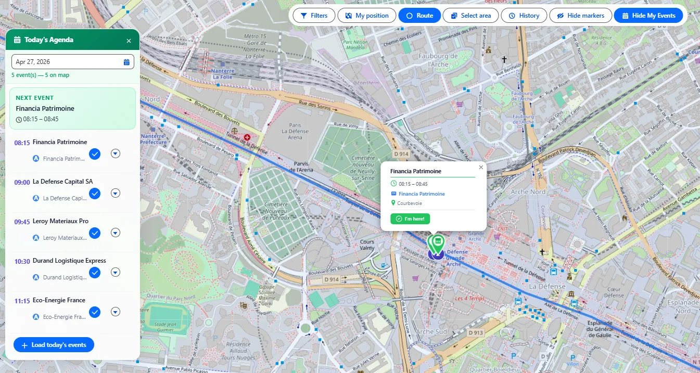
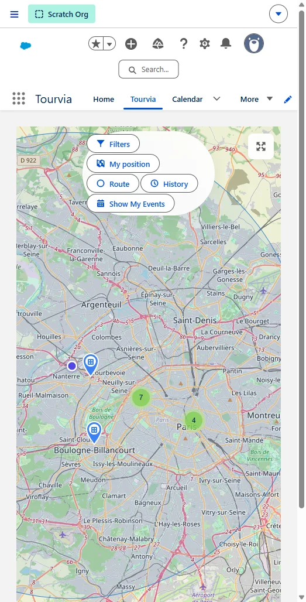

Documentation Guide utilisateur TourviaApp 7.34.0.1
Guide utilisateur Tourvia
Guide quotidien des opérations terrain pour commerciaux et managers
Version du package : TourviaApp 7.34.0.1 | Juillet 2026
Public : Commerciaux terrain, managers de territoire
Plateforme : Salesforce Desktop & Salesforce Mobile App
- Agenda du jour — le nom du contact lié et son numéro de téléphone (lien tap-to-call) s'affichent désormais sur chaque événement de l'Agenda du jour (depuis 7.22.0 ; correctif en 7.25.0 pour les événements Compte + Contact participant).
- Planifier depuis une Campagne Salesforce — un 6e point d'entrée de tournée : un sélecteur inline Campagne ajoute en un clic tous les Membres de campagne géocodés comme étapes (depuis 7.22.0).
- Recentrage carte agenda — cliquer sur un événement de l'Agenda recentre le marker dans la zone visible de la carte (plus caché sous le panneau, depuis 7.22.0).
- TourviaApp 7.26.0 — Source de la date de dernière visite configurable. Un nouveau champ RouteForceConfig__mdt, LastVisitDateSource__c, permet de choisir si le filtre « Non visité depuis » de la carte (ainsi que la date de dernière visite et le compteur affichés sur les markers) s'appuie sur les check-ins VisitReport (par défaut) ou sur les Events d'agenda passés. Fonctionne sur les Comptes, Pistes, Opportunités et Membres de campagne. L'agenda du jour affiche aussi un badge « C » cumulatif pour les events dont le contact/piste est membre d'une campagne.
- 7.29.0 — « Choisir une date… » sur le filtre « Non visité depuis » : sélectionnez une date fixe et la carte n'affiche que les enregistrements non visités depuis cette date — idéal pour couvrir 100 % du parc chaque période. La date est conservée dans les filtres enregistrés.
- 7.30.0 — Confort & fiabilité : messages d'erreur entièrement traduits (FR/ES), l'Agenda du jour affiche un indicateur de chargement et montre toujours le bon jour lors de changements de date rapides, et le taux « sur site » des rapports respecte désormais le rayon de check-in configuré dans votre org.
- 7.31.0 — Heures fiables & ajustements en un tap : réorganiser sa tournée garde des heures réalistes (mêmes règles que l'optimisation), la pause déjeuner est toujours respectée — même en ajustant une heure à la main — les visites qui ne tiennent pas dans la journée restent visibles avec une alerte, et taper sur l'heure d'un RDV ouvre des boutons −15/+15 qui décalent le reste de la journée en direct.
- 7.32.0 — Fiabilité grands territoires : la carte charge désormais tous les markers même sur de très gros territoires (elle pouvait s’arrêter silencieusement vers 4 000), le point de départ choisi survit au reset et à un fix GPS tardif (le recalcul part bien du point choisi), une heure modifiée à la main est clairement recalculée après réorganisation (plus de badge ✎ trompeur), le bouton check-in affiche un loader pendant l’acquisition GPS, et le filtre « Non visité depuis » reste exact à côté des comptes très visités.
- 7.33.0 — Sécurité & confort au quotidien : la confirmation de check-in affiche le nom de la visite (fini le « Pointer votre arrivée ? » générique), les boutons check-in/check-out de l'Agenda du jour sont plus grands et plus faciles à taper en mobilité, le panneau de tournée revient sur l'étape 1 après une optimisation pour montrer immédiatement le nouvel ordre et les horaires, les premières visites de la journée respectent désormais la pause déjeuner et la fin de journée comme toutes les autres, le sélecteur de contact d'une étape propose toujours la liste complète des contacts du compte, et vos comptes-rendus, historiques et filtres enregistrés sont mieux protégés dans votre org.
- 7.34.0.1 — Recalcul fiable & accès clavier : modifier les options de tournée efface désormais l’ancien planning avant la création des Events, un recalcul lent ne peut plus faire réapparaître une étape obsolète et le focus clavier se place correctement sur les actions d’étape. Le filtre de récence Agentforce s’applique avant la limite de résultats. Les markers restent visibles lorsqu’un champ de type optionnel est vide ou invalide.
Tourvia est un outil cartographique livré sous forme de package managé Salesforce. Il permet de visualiser un territoire, filtrer les enregistrements, planifier des tournées, utiliser un contrôle de proximité assisté par GPS et conserver l'historique des tournées dans Salesforce.
1. Premiers pas
Ouvrir Tourvia
- Cliquez sur le Lanceur d'application (icône gaufre) dans Salesforce.
- Tapez Tourvia et sélectionnez l'application.
- La carte se charge automatiquement avec vos enregistrements géocodés.

Vue d'ensemble de l'interface
| Zone | Rôle |
|---|---|
| Carte | Carte interactive affichant les Comptes, Pistes et Opportunités sous forme de markers colorés |
| Panneau Filtres (à gauche) | Restreindre les enregistrements affichés sur la carte |
| Panneau Tournée (à droite) | Construire, optimiser et gérer les étapes de votre tournée |
| Panneau Événements | Voir les événements de calendrier du jour sur la carte |
| Panneau Historique | Parcourir et recharger les tournées sauvegardées |
Onglets principaux
- Tourvia : la carte en direct et l'espace de planification
- Historique des tournées : toutes les tournées précédemment sauvegardées
- Filtres sauvegardés : presets de filtres réutilisables que vous avez créés ou qui vous ont été partagés
- Comptes-rendus de visite : enregistrements de check-in/check-out et résultats des visites
- Configuration : paramètres réservés aux admins (non couvert dans ce guide)
2. La carte
La carte est le cœur de Tourvia. Elle affiche trois types d'objets simultanément pour vous donner une vue complète de votre territoire en un coup d'œil.
Affichage multi-objets
Tourvia affiche les Comptes, Pistes, Opportunités et Membres de campagne (Membres de campagne — depuis 7.20.0) sur la carte en même temps. Chaque type d'objet utilise une couleur de marker distincte pour les distinguer instantanément. Active ou désactive chaque couche via les pills d'affichage au-dessus de la carte.
| Couleur du marker | Objet |
|---|---|
| Tons bleus | Comptes |
| Tons turquoise / vert | Pistes |
| Tons orange / rouge | Opportunités |
| Tons rose / magenta | Membres de campagne |
| Violet / icône calendrier | Événements (lorsque chargés) |
Couche Membres de campagne
La couche Membres de campagne place sur la carte chaque membre géocodé d'une campagne — pratique pour planifier une tournée autour d'un roster précis (Roadshow, Webinar, salon, etc.). Un Membre de campagne n'a pas d'adresse propre : Tourvia résout les coordonnées depuis la Piste ou le Contact parent.
- Sur une page Record Campaign — pose le composant Tourvia sur une Lightning Page Campagne ; la couche est automatiquement filtrée sur cette campagne et affiche tous les membres géocodés.
- Depuis l'onglet Tourvia global — ouvre Filtres & Options → Membres de campagne et sélectionne une campagne dans le lookup. Laisse vide pour charger tous les membres géocodés toutes campagnes confondues (le slider rayon continue de filtrer par distance autour de ta position).
- Check-in, construction de tournée, création d'événement — fonctionnent comme pour tout autre marker. Le WhoId de l'événement est positionné sur la Piste ou le Contact (selon le parent qui porte les coordonnées) et le WhatId est la Campagne le cas échéant.

Couches cartographiques
Basculez entre les styles de carte via le sélecteur de fond de plan en haut à droite :
- Standard : carte de rues sobre, idéale pour la planification quotidienne
- Satellite : imagerie aérienne, utile pour repérer des bâtiments ou des sites ruraux
- Terrain : vue topographique, utile pour les territoires à fort relief
Clustering
Lorsque de nombreux markers sont proches, Tourvia les regroupe en clusters. Un cluster affiche le nombre de positions sur la carte qu'il contient. Cliquez sur un cluster pour zoomer et révéler les markers individuels.
- Le rayon de clustering est défini à 60 pixels par défaut (configurable par votre admin).
- En zoomant, les clusters se décomposent automatiquement en markers individuels.
Contrôles de la carte
| Contrôle | Fonction |
|---|---|
| Zoom + / - | Zoomer ou dézoomer (niveau de zoom par défaut : 10) |
| Plein écran | Étendre la carte à toute la fenêtre du navigateur |
| Ma position | Centrer la carte sur votre position GPS actuelle |
| Sélecteur de fond | Basculer entre Standard, Satellite et Terrain |
| Échelle | Affiche la distance approximative sur la carte |
Source d'adresse
Les markers sont placés à partir des adresses géocodées. Votre admin configure si Tourvia utilise l'adresse de livraison ou l'adresse de facturation pour les Comptes. Si un enregistrement n'a pas de coordonnées valides, il n'apparaîtra pas sur la carte.
3. Popups de markers et actions
Cliquez sur n'importe quel marker pour ouvrir son popup. Le popup affiche les informations clés et donne accès à des actions rapides, sans quitter la carte.

Ce que vous voyez dans le popup
Le popup fonctionne pour les Comptes, Pistes et Opportunités. Chacun affiche :
- Nom de l'enregistrement : lien cliquable en haut, code couleur par type (bleu pour Compte, vert pour Piste, orange pour Opportunité). Ouvre l'enregistrement Salesforce complet.
- Adresse : avec un lien d'itinéraire qui ouvre Google Maps avec navigation guidée vers ce lieu
- Numéro de téléphone : tap pour appeler directement (click-to-call, en vert)
- Propriétaire : l'utilisateur Salesforce assigné à cet enregistrement
- Date de dernière visite : date du dernier check-in. Devient rouge avec un compteur de "jours" si la visite est en retard (selon le seuil défini par votre admin)
- Dernier compte-rendu de visite : si un compte-rendu existe, affiche le résultat (Positif/Neutre/Négatif) avec un lien pour ouvrir le rapport complet
- Champs additionnels : champs supplémentaires configurés par votre admin (industrie, type, étape, etc.)
- Pour les Opportunités : affiche aussi le nom du Compte parent en lien cliquable
- Plusieurs enregistrements à la même adresse : la popup bascule en vue groupe et liste tous les enregistrements de ce lieu, chacun avec son lien et ses actions rapides
Actions disponibles
| Action | Effet |
|---|---|
| Créer un événement | Bouton vert au bas du popup. Crée un Événement Salesforce lié à cet enregistrement (Compte, Piste ou Opportunité) : planifiez une visite en un tap. |
| Click-to-Call | Tapez sur le numéro de téléphone pour appeler depuis votre appareil. Sur mobile, lance le composeur téléphonique. |
| Naviguer | Tapez sur l'icône d'itinéraire à côté de l'adresse pour ouvrir Google Maps avec un itinéraire vers ce lieu. |
| Ouvrir l'enregistrement | Cliquez sur le nom du compte pour ouvrir l'enregistrement Salesforce complet dans un nouvel onglet. |
| Actions personnalisées | Votre admin peut ajouter des boutons supplémentaires (Screen Flows), par exemple un formulaire de commande rapide ou un sondage client. |
Recherche de contacts (Étapes de tournée)
Lorsque vous ajoutez un Compte à votre tournée, la carte d'étape peut afficher les Contacts liés à ce compte. Cela vous permet de voir qui appeler ou rencontrer avant d'y aller. Cette fonction est contrôlée par votre admin (ContactLookupEnabled) et apparaît dans le panneau Tournée, pas dans le popup carte.
Actions personnalisées (configurées par l'admin)
Les admins peuvent ajouter des boutons d'action personnalisés au popup via la métadonnée RouteForceAction__mdt. Ils lancent des Screen Flows directement depuis le popup, par exemple un sondage de prix, un audit de linéaire ou un formulaire de réassort. Voir le Configuration Guide pour les détails.
4. Filtrer les enregistrements
Le panneau Filtres vous permet de contrôler exactement quels enregistrements apparaissent sur la carte. Utilisez-le pour vous concentrer sur un segment de territoire, un type de client ou une liste de relances.

Champs de filtre par défaut
Tourvia livre 2 filtres par défaut :
- Compte.Industrie
- Compte.Type
Votre admin peut ajouter autant de filtres que nécessaire : soit via RouteForceConfig__mdt (FilterFields__c), soit via Lightning App Builder (FlexiPage). Les filtres sont des chemins de champs séparés par des virgules, par exemple :
Account.Industry,Account.Type,Opportunity.StageName,Lead.Status,Opportunity.Account.Industry
Les filtres cross-objet sont supportés (ex. Opportunity.Account.Industry).
Types de champs supportés
- Liste de sélection : choisir une ou plusieurs valeurs dans un dropdown
- Liste de sélection multiple : choisir plusieurs valeurs avec des cases à cocher
- Booléen (case à cocher) : activer/désactiver
Filtre "Non visité depuis"
Ce filtre spécial met en avant les enregistrements non visités depuis un certain nombre de jours. Le seuil par défaut est de 30 jours. Utilisez-le pour identifier les comptes ou pistes négligés qui demandent de l'attention.
Date fixe (v7.29+) : la liste propose aussi « Choisir une date… », qui affiche un champ date. La carte ne montre alors que les enregistrements sans visite à partir de cette date (les enregistrements jamais visités sont toujours inclus). Contrairement aux options glissantes « 3/6/12 mois », une date fixe correspond aux objectifs par période calendaire — saisissez par exemple le premier jour de la période en cours (trimestre, quadrimestre…) pour voir tout le parc restant à visiter et viser 100 % de couverture. La date choisie est conservée dans les filtres enregistrés : vous pouvez maintenir un filtre par période (mettez la date à jour à chaque début de période).
Comment utiliser les filtres
- Ouvrez le panneau Filtres à gauche.
- Définissez une ou plusieurs valeurs de filtre.
- Cliquez sur Appliquer pour rafraîchir la carte.
- La carte affiche désormais uniquement les enregistrements correspondant à vos critères.
5. Sauvegarder et partager des filtres
Lorsque vous trouvez une combinaison de filtres que vous utilisez régulièrement, sauvegardez-la en preset pour la réappliquer en un clic.
Sauvegarder un preset de filtre
- Configurez vos filtres exactement comme souhaité.
- Cliquez sur Sauvegarder le filtre dans le panneau Filtres.
- Saisissez un nom descriptif (ex. "Comptes Manufacture Hot - Nord").
- Choisissez la visibilité : cochez Rendre visible à tous les utilisateurs pour partager à toute l'org, ou laissez décoché pour le garder privé.
- Cliquez sur Sauvegarder.
Charger un filtre sauvegardé
- Ouvrez le menu déroulant Filtres sauvegardés. Les filtres sont groupés : Mes filtres (les vôtres) et Filtres partagés (créés par d'autres).
- Sélectionnez un preset. Tourvia applique immédiatement toutes les valeurs de filtre et rafraîchit la carte.
- Un badge de propriété apparaît sous le menu indiquant si le filtre actif est Privé, Visible à tous, ou partagé par [nom du propriétaire].
Supprimer un filtre sauvegardé
- Sélectionnez le preset depuis le menu déroulant.
- Cliquez sur le bouton Supprimer. Ce bouton est uniquement actif pour les filtres que vous avez créés ; si le filtre appartient à un autre utilisateur, le bouton est désactivé avec une infobulle explicative.
- Confirmez la suppression.
6. Planification de tournée
Le panneau Tournée est l'endroit où vous construisez votre plan terrain quotidien. Ajoutez les étapes que vous souhaitez visiter, organisez-les dans l'ordre, configurez la temporalité, et laissez Tourvia s'occuper du reste.

Ajouter des étapes
Plusieurs façons d'ajouter des étapes à votre tournée :
- Depuis la carte : en mode tournée, cliquez sur n'importe quel marker pour l'ajouter directement comme étape.
- Depuis la recherche : utilisez la barre de recherche du panneau Tournée pour trouver un enregistrement par nom, puis ajoutez-le.
- Depuis une Campagne Salesforce (depuis 7.22.0) — un second sélecteur inline à côté du picker Compte/Piste/Opportunité permet de choisir une Campagne ; tous les Membres de campagne géocodés (Piste, ou le Compte du Contact) sont ajoutés comme étapes en un clic. Même UX inline que les autres entrées (pas de modale). Votre admin peut désactiver ce picker par org.
Chaque étape affiche son numéro de séquence, le nom de l'enregistrement, la ville et le type (Compte, Piste ou Opportunité).
Réordonner les étapes
- Glisser-déposer : saisissez une étape et déplacez-la à une nouvelle position dans la liste.
- La carte met à jour le tracé de la tournée en temps réel à mesure que vous réordonnez.
Annuler / Refaire
Une erreur ? Utilisez les boutons Annuler et Refaire en haut du panneau Tournée pour revenir en arrière ou avancer dans vos modifications récentes.
Supprimer une étape
Cliquez sur l'icône poubelle à côté d'une étape pour la retirer de la tournée.
Paramètres de tournée
Avant d'optimiser, configurez ces paramètres temporels pour obtenir des estimations d'arrivée réalistes :
| Paramètre | Description |
|---|---|
| Heure de départ | Heure à laquelle vous prévoyez de partir pour votre première étape |
| Durée de visite | Temps moyen passé à chaque étape (utilisé pour le calcul des heures d'arrivée) |
| Pause déjeuner | Plage horaire réservée au déjeuner ; l'optimiseur ne planifiera pas de visites pendant ce créneau |
| Fin de journée | Heure limite des visites ; les étapes au-delà seront signalées |
| Éviter les péages | Contourner les routes à péage si possible |
| Éviter les autoroutes | Privilégier les routes secondaires (utile pour les territoires ruraux) |
7. Optimisation de tournée
Une fois que vous avez au moins deux étapes et un point de départ, cliquez sur Optimiser pour laisser Tourvia calculer l'ordre le plus efficace.
Ce qui se passe lors de l'optimisation
- Tourvia envoie vos étapes et les contraintes sélectionnées à son moteur d'optimisation.
- Les étapes sont réordonnées pour minimiser le temps total de trajet et la distance.
- La tournée optimisée est dessinée sur la carte sous forme de tracé coloré reliant chaque étape dans l'ordre.
- Les heures d'arrivée estimées sont calculées pour chaque étape, en respectant l'heure de départ, la durée de visite, la pause déjeuner et la fin de journée.
- Un résumé de tournée apparaît avec la distance totale (en km) et la durée totale.
Après l'optimisation
Vous pouvez encore ajuster après optimisation :
- Réordonner manuellement les étapes si vous préférez une autre séquence.
- Ajouter ou retirer des étapes et ré-optimiser.
- Modifier les paramètres (heure de départ, pause déjeuner, etc.) et optimiser à nouveau.
8. Exporter les tournées
Après avoir construit ou optimisé une tournée, vous pouvez l'exporter pour la navigation ou le reporting.
Exporter vers Google Maps
Cliquez sur Exporter vers Google Maps pour ouvrir la tournée dans Google Maps avec toutes vos étapes en points de passage. Vous obtenez la navigation guidée pour votre journée terrain.
- Sur desktop, Google Maps s'ouvre dans un nouvel onglet.
- Sur mobile, l'app Google Maps s'ouvre directement pour la navigation en temps réel.
Exporter en CSV
Cliquez sur Exporter CSV pour télécharger un tableur avec les détails de la tournée :
| Colonne | Contenu |
|---|---|
| Numéro d'étape | Position dans la séquence de la tournée |
| Nom de l'enregistrement | Nom du Compte, de la Piste ou de l'Opportunité |
| Ville | Ville de l'adresse de l'enregistrement |
| Heure d'arrivée | Estimation basée sur l'optimisation |
| Contact | Contact assigné (si disponible) |
| Distance | Distance depuis l'étape précédente |
| Durée | Temps de trajet depuis l'étape précédente |
9. Créer des événements Salesforce
Tourvia peut créer des Événements Salesforce directement depuis vos étapes de tournée, pour que votre calendrier reflète votre plan terrain.
Créer des événements depuis une tournée
- Construisez et optimisez votre tournée.
- Cliquez sur Créer des événements (ou Créer des visites).
- Les événements créés depuis les popups markers utilisent le flow RF_CreateEvent.
- Chaque événement inclut :
- Sujet : le nom du compte ou de l'enregistrement
- Heures de début et de fin (basées sur les estimations d'optimisation)
- Enregistrement lié (Compte, Piste ou Opportunité)
- Lieu
Création d'événements en masse
Après optimisation, vous pouvez créer des événements pour toutes les étapes en une fois plutôt qu'un par un. La création en masse depuis le panneau Tournée utilise un Apex direct (RouteService.createRouteEvents) pour la performance. C'est le moyen le plus rapide de remplir votre calendrier de la journée.
Détection de chevauchement de calendrier
Tourvia vérifie votre calendrier Salesforce existant avant de créer les événements. Si un nouvel événement chevauche un existant, vous verrez un avertissement pour ajuster la temporalité ou sauter cette étape.

10. Agenda du jour (panneau Événements)
Le panneau Événements vous donne une vue rapide de vos événements Salesforce du jour, affichés directement sur la carte.
Comment l'utiliser
- Ouvrez le panneau Événements.
- Les événements du jour sont chargés automatiquement et affichés en markers sur la carte.
- Utilisez le toggle Afficher/Masquer les événements pour contrôler la visibilité des markers.
Détails d'un événement
Cliquez sur un marker d'événement pour voir :
- Sujet et heure de l'événement
- Enregistrement lié (Compte, Piste, Opportunité)
- Lieu
- Le nom du contact lié (si l'événement a un
WhoIdpointant sur une Piste ou un Contact) — cliquable pour ouvrir la fiche. - Le numéro de téléphone du contact en lien tap-to-call (Mobile prioritaire, sinon Phone) — un tap ouvre le composeur sur mobile, FaceTime/Teams sur desktop.
- Boutons d'action rapide (ouvrir l'enregistrement, naviguer, check-in)
WhoId positionné sur un Contact). La ligne est masquée si aucun téléphone n'est disponible.11. Check-in / Check-out (comptes-rendus de visite)
Le système de check-in/check-out permet d'enregistrer les visites avec un contrôle de proximité assisté par GPS et un compte-rendu structuré. Le résultat dépend de la précision du terminal, du géocodage et du rayon configuré; il ne constitue pas une preuve d'identité ou de présence.

Étape 1 : Check-in
- À votre arrivée chez le client, ouvrez le marker d'événement ou l'événement depuis le panneau Événements.
- Cliquez sur Check-in.
- Tourvia capture votre position GPS et vérifie que vous êtes à proximité du lieu.
- Le rayon de détection on-site est de 500 mètres par défaut (configurable par votre admin).
- La précision GPS est affichée pour que vous sachiez quel niveau de précision a été obtenu.
- Tourvia crée un enregistrement VisitReport__c léger avec vos coordonnées GPS et l'horodatage uniquement.
Contexte de la visite précédente
Lors du check-in, Tourvia vous montre un résumé de la visite précédente chez ce client (si elle existe). Cela inclut la date, le résultat et les notes de la dernière visite, pour que vous ayez du contexte avant la réunion.
Étape 2 : Compléter le compte-rendu
Après votre rendez-vous, remplissez le compte-rendu. Le formulaire affiche 3 champs standards (Résultat, Action suivante, Notes) plus des champs personnalisés configurables par l'admin. Par défaut, les champs personnalisés incluent Satisfaction, Montant de commande et Date de prochaine visite ; votre admin peut modifier cela via VisitReportCustomFields__c dans RouteForceConfig__mdt.
| Champ | Description |
|---|---|
| Résultat | Issue globale de la visite. Champ texte ; les options disponibles sont configurées par votre admin via VisitResultOptions__c. Options par défaut : Positif, Neutre, Négatif, Sans réponse. |
| Action suivante | Quelle action de relance est nécessaire (ex. envoyer un devis, planifier une démo) |
| Notes | Champ rich text libre pour les notes détaillées de visite (supporte les Quick Text, voir Section 15) |
| Satisfaction (champ personnalisé) | Niveau de satisfaction client observé pendant la visite |
| Montant de commande (champ personnalisé) | Si une commande a été passée, saisir le montant |
| Date de prochaine visite (champ personnalisé) | Quand le client devrait être visité à nouveau |
Étape 3 : Check-out
- Cliquez sur Check-out quand vous êtes prêt à partir.
- Tourvia met à jour le VisitReport__c existant avec le résultat, les notes, l'action suivante et l'horodatage de check-out.
- Tourvia calcule automatiquement la durée de visite (entre check-in et check-out).
Après le check-out
- L'enregistrement Compte-rendu de visite, créé au check-in et complété au check-out, est lié au Compte/Piste/Opportunité.
- Un lien Google Maps vers le lieu de check-in est sauvegardé pour référence.
- Votre manager peut consulter les comptes-rendus depuis l'onglet Comptes-rendus de visite.
12. Historique des tournées
Chaque tournée que vous construisez est sauvegardée automatiquement. Vous pouvez parcourir les tournées passées, les rejouer sur la carte et les réutiliser comme modèles pour de futures journées.
Parcourir les tournées passées
- Ouvrez l'onglet Historique des tournées.
- Les tournées sont listées par date, les plus récentes en premier.
- Chaque entrée affiche :
- Nom de la tournée (si nommage activé) ou date
- Nombre d'étapes
- Distance totale (km)
- Durée totale
- Si elle a été optimisée
Rejouer une tournée sur la carte
Sélectionnez une tournée passée pour la rejouer sur la carte. Le tracé, les étapes et la séquence sont affichés tels qu'ils étaient. Utile pour :
- Revoir ce que vous avez fait un jour donné
- Montrer à votre manager votre couverture territoriale
- Recharger une tournée éprouvée comme point de départ pour une nouvelle journée
Nommage des tournées
Si votre admin a activé le nommage des tournées (EnableHistoryNaming), vous pouvez donner à chaque tournée un nom descriptif (ex. "Secteur Nord - Tour Lundi"). Cela facilite la recherche d'une tournée spécifique plus tard.
Supprimer une tournée
Sélectionnez une tournée et cliquez sur Supprimer pour la retirer de votre historique. Cette action est irréversible.

13. Heatmap (carte de chaleur)
La superposition Heatmap fournit une vue visuelle de la densité de vos enregistrements. Les zones avec beaucoup d'enregistrements apparaissent en couleurs chaudes (rouge, forte densité), tandis que les zones clairsemées apparaissent en indigo/violet (faible densité), avec une transition par les ambres entre les deux.
Comment l'utiliser
- Cliquez sur le bouton toggle Heatmap dans la barre d'outils.
- La superposition heatmap apparaît au-dessus de la carte.
- Cliquez à nouveau pour la désactiver et revenir aux markers individuels.
Quand l'utiliser
- Identifier les zones de votre territoire avec la plus forte concentration d'enregistrements.
- Repérer les zones sous-couvertes avec peu de comptes ou pistes.
- Planifier des journées de tournée autour des zones à forte densité pour gagner en efficacité.
14. Sélection multiple (rectangle)
L'outil de sélection rectangulaire vous permet de sélectionner plusieurs enregistrements sur la carte en une fois en dessinant une zone de sélection.

Comment l'utiliser
- Cliquez sur Sélectionner une zone dans la barre d'outils.
- Cliquez et glissez sur la carte pour dessiner un rectangle autour des enregistrements à sélectionner.
- Tous les markers à l'intérieur du rectangle sont sélectionnés et mis en évidence.
Que faire avec une sélection
- Tout ajouter à la tournée : ajoute chaque enregistrement sélectionné comme étape en une action.
- Opérations en masse : selon la configuration de votre admin, d'autres actions peuvent être disponibles.
15. Quick Text pour les notes de visite
Quick Text fournit des modèles de texte prédéfinis insérables dans le champ Notes pendant le check-in/check-out. Cela fait gagner du temps et garantit un reporting cohérent.
Comment l'utiliser
- Pendant le check-in ou check-out, cliquez dans le champ Notes.
- Cliquez sur le bouton Quick Text (ou cherchez l'icône modèle).
- Sélectionnez un modèle dans la liste.
- Le texte du modèle est inséré dans le champ Notes.
- Modifiez le texte inséré pour ajouter des détails spécifiques.
Support du rich text
Le champ Notes supporte le formatage rich text : gras, italique, puces et plus. Les modèles Quick Text peuvent inclure du formatage pour que vos notes soient professionnelles et bien structurées.
QuickTextEnabled__c). Les modèles sont des enregistrements Quick Text Salesforce standards, gérés dans Configuration > Quick Text, pas dans la configuration Tourvia.16. Utilisation mobile
Tourvia est totalement fonctionnel sur l'application Salesforce Mobile. La carte, les tournées, le check-in et les comptes-rendus marchent tous sur votre téléphone.

Vue d'ensemble de l'interface mobile
La vue mobile affiche la carte interactive complète avec vos comptes, pistes et opportunités sous forme de markers et clusters (cercles verts numérotés). La carte supporte le pincement pour zoomer et le glissement pour naviguer.
Le bouton FAB (bouton +)
Le bouton d'action flottant (FAB) indigo en bas à droite est votre hub d'actions principal sur mobile. Tapez dessus pour accéder à :
- Filtres : ouvrir le panneau de filtres pour réduire les enregistrements visibles
- Ma position : centrer la carte sur votre position GPS actuelle
- Tournée : ouvrir le planificateur pour ajouter des étapes et optimiser
- Historique : parcourir et rejouer vos tournées passées
- Afficher mes événements : basculer l'affichage des événements du jour sur la carte
- Sélection multiple : dessiner un rectangle pour sélectionner plusieurs enregistrements (si activé par l'admin)
- Masquer les markers : masquer temporairement tous les markers pour voir la carte clairement (si activé)
Le bouton info (en bas à gauche) affiche la légende de la carte et les codes couleur des différents types de markers.
Workflows mobiles clés
| Workflow | Comment ça marche sur mobile |
|---|---|
| Check-in GPS | Utilise le GPS du téléphone pour une vérification de position précise. La détection on-site (rayon 500m) fonctionne avec une meilleure précision qu'en desktop. |
| Click-to-Call | Tapez sur un numéro de téléphone dans un popup : lance directement un appel. |
| Appeler depuis l'Agenda du jour | Le téléphone du contact affiché sur chaque événement est un lien tel: qui ouvre directement votre composeur (depuis 7.22.0). |
| Naviguer | Tapez sur "Naviguer" sur un marker : ouvre Google Maps avec navigation guidée. |
| Comptes-rendus | Remplissez les formulaires de check-in/check-out sur votre téléphone immédiatement après chaque visite. Tous les champs (résultat, satisfaction, action suivante, notes) sont optimisés tactile. |
| Export de tournée | Exportez votre tournée optimisée vers Google Maps : lance l'app pour la navigation en temps réel entre étapes. |
17. Dépannage
| Problème | Que vérifier |
|---|---|
| Aucun marker n'apparaît sur la carte | Les enregistrements doivent avoir des coordonnées latitude/longitude valides. Demandez à votre admin de vérifier que le géocodage tourne. |
| La carte ne se charge pas | Vérifiez votre connexion internet. Si le problème persiste, demandez à votre admin de vérifier la licence Tourvia et les paramètres de site distant. |
| L'optimisation de tournée échoue | Réduisez le nombre d'étapes (max 50) et réessayez. Vérifiez que toutes les étapes ont des adresses valides. |
| Les événements n'apparaissent pas sur la carte | Vérifiez que vous avez des Événements pour aujourd'hui dans votre calendrier Salesforce. Essayez le toggle Afficher/Masquer. |
| Le bouton Check-in est grisé | Vous êtes peut-être trop loin (hors du rayon de 500m). Rapprochez-vous et réessayez. Si vous êtes sur place, vérifiez que le GPS est activé sur votre appareil. |
| Le check-in dit "Précision GPS faible" | Déplacez-vous vers un espace dégagé loin des grands bâtiments. Attendez quelques secondes la stabilisation du GPS, puis réessayez. |
| L'export CSV est vide | Vous devez d'abord optimiser la tournée. Construisez vos étapes, cliquez sur Optimiser, puis exportez. |
| Les changements de filtre n'ont aucun effet | Assurez-vous de cliquer sur Appliquer après avoir modifié les valeurs de filtre. |
| Le bouton Heatmap ou Sélectionner une zone est absent | Ces fonctions sont optionnelles. Demandez à votre admin de les activer dans la configuration Tourvia. |
| Les modèles Quick Text n'apparaissent pas | Quick Text doit être activé par votre admin. Contactez-le pour vérifier la configuration. |
| Un enregistrement spécifique manque sur la carte | L'enregistrement n'a peut-être pas d'adresse géocodée, ou il est filtré. Effacez tous les filtres et vérifiez s'il apparaît. |
| L'historique de tournées est vide | Les tournées sont sauvegardées quand vous les construisez. Si vous n'en avez jamais créé, l'historique est vide. |
| Markers Membres de campagne (via Contact) non affichés | Symptôme : aucun marker de campagne basé sur un Contact. Cause probable : FLS manquant sur Contact.OtherAddress / Contact.OtherLatitude / Contact.OtherLongitude. Action : contacter votre admin (résolu out-of-the-box depuis TourviaApp 7.23.0). |
18. Bonnes pratiques
Planifier votre journée
- Commencez chaque matin en ouvrant Tourvia et en revoyant votre Agenda du jour.
- Utilisez le filtre "Non visité depuis" pour identifier les comptes nécessitant de l'attention.
- Restez réaliste : 5 à 10 étapes par journée est typique. Ne surchargez pas votre planning.
- Définissez l'heure de départ et la durée de visite précises avant d'optimiser pour des estimations fiables.
- Exportez votre tournée optimisée vers Google Maps avant de quitter le bureau.
Sur le terrain
- Faites le check-in immédiatement à l'arrivée chez chaque client. N'attendez pas la fin de journée.
- Faites le check-out avant de partir pour que la durée de visite soit calculée correctement.
- Utilisez les modèles Quick Text pour accélérer la prise de notes tout en gardant des comptes-rendus cohérents.
- Utilisez le Click-to-Call du popup pour appeler avant de rouler vers une étape.
- Si une étape est annulée, retirez-la de votre tournée et ré-optimisez.
Gérer son territoire
- Sauvegardez des presets de filtres pour les vues récurrentes (ex. "Comptes Stratégiques - Est", "Nouvelles Pistes - Ce mois").
- Partagez les filtres utiles en presets publics pour que votre équipe en bénéficie.
- Utilisez la Heatmap pour visualiser la densité des comptes et repérer les zones de couverture insuffisante.
- Revoyez votre Historique des tournées chaque semaine pour vérifier la couverture équilibrée.
- Nommez vos tournées (si activé) pour les retrouver facilement plus tard.
Pour les managers
- Consultez les Comptes-rendus de visite pour suivre l'activité de l'équipe et les résultats.
- Utilisez l'onglet Historique des tournées pour voir les zones couvertes par vos commerciaux.
- Vérifiez les durées de visite et les résultats pour identifier des opportunités de coaching.
- Créez des presets de filtres publics pour standardiser la segmentation territoriale de votre équipe.
19. Support
Si vous rencontrez un problème non couvert dans ce guide :
- Consultez la section Dépannage ci-dessus.
- Contactez votre administrateur Salesforce ; il peut vérifier votre configuration et vos permissions.
- Si le problème persiste, contactez le support Tourvia à contact@gettourvia.com.
TourviaApp 7.34.0.1 | Guide utilisateur | Juillet 2026
https://gettourvia.com
Fin du document. Haut de pageIndex de la documentation